×


شَذَرات
SHAZHARAT
👥 مَن نحن؟
نحن طلاب الفرقة الرابعة بقسم العلاقات العامة والإعلان، كلية الإعلام – جامعة بنى سويف.
لم يكن مشروع تخرجنا مجرد مهمة أكاديمية تنتهي بانتهاء العام الدراسي، بل اخترنا أن يكون رسالة نابضة بالحياة، تُعيد إحياء الجذور وتُسلط الضوء على الكنوز الحية التي صاغتها أيدي المبدعين المصريين عبر العصور.
✨ عن "شذرات"
"الشذرات هي قِطَع الذهب الصغيرة والصافية.. وهكذا هي تفاصيل هويتنا المصرية؛ مبعثرة في أركان المحروسة، وكل قطعة منها تحكي قصة وطن."
"شذرات" هي حملة إعلامية متكاملة ولدت من شغفنا بتوثيق وحفظ الهوية الثقافية والحرف التراثية المصرية التي تواجه خطر الاندثار.
📱 تابعنا على منصات التواصل
امسح الكود للوصول لصفحاتنا على فيسبوك وإنستغرام وتيك توك
✨ شذرات.. بنجمع خيوط الماضي، عشان ننور بيها طريق المستقبل.